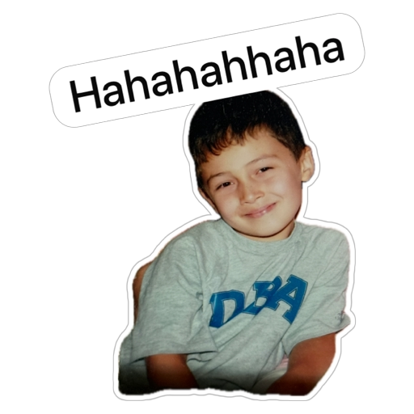
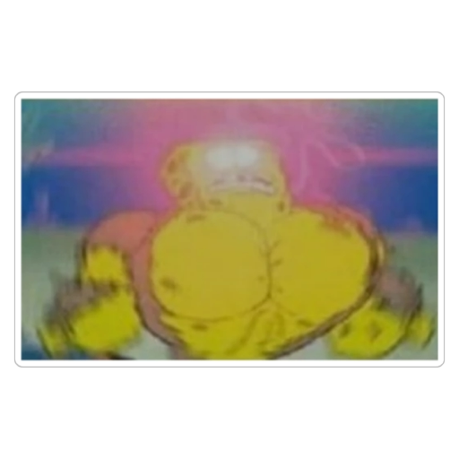
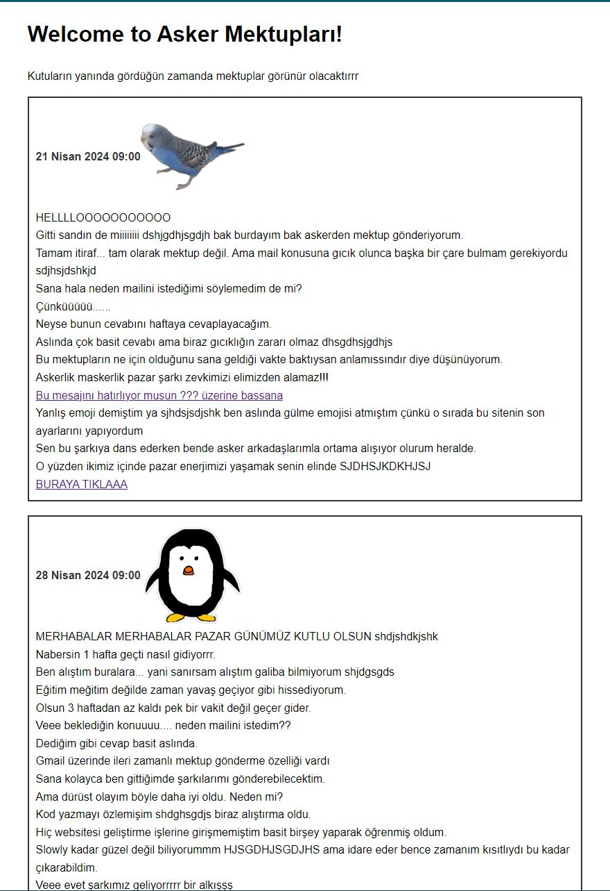
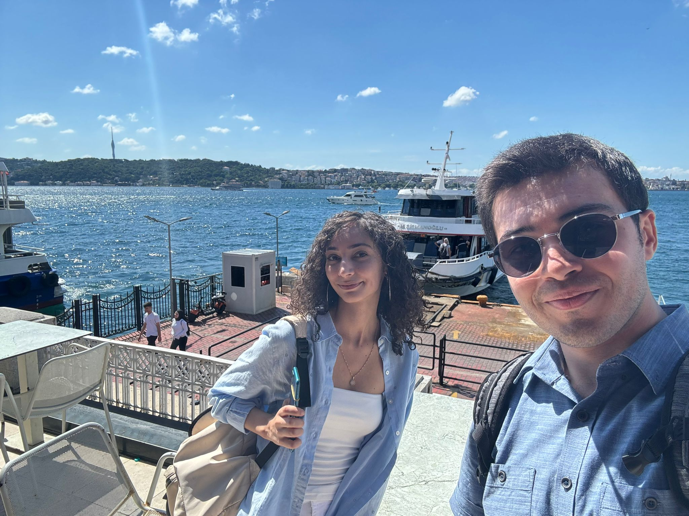
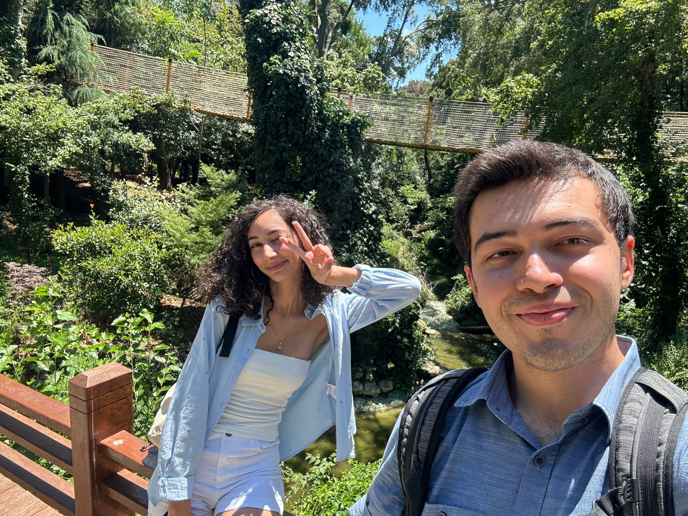
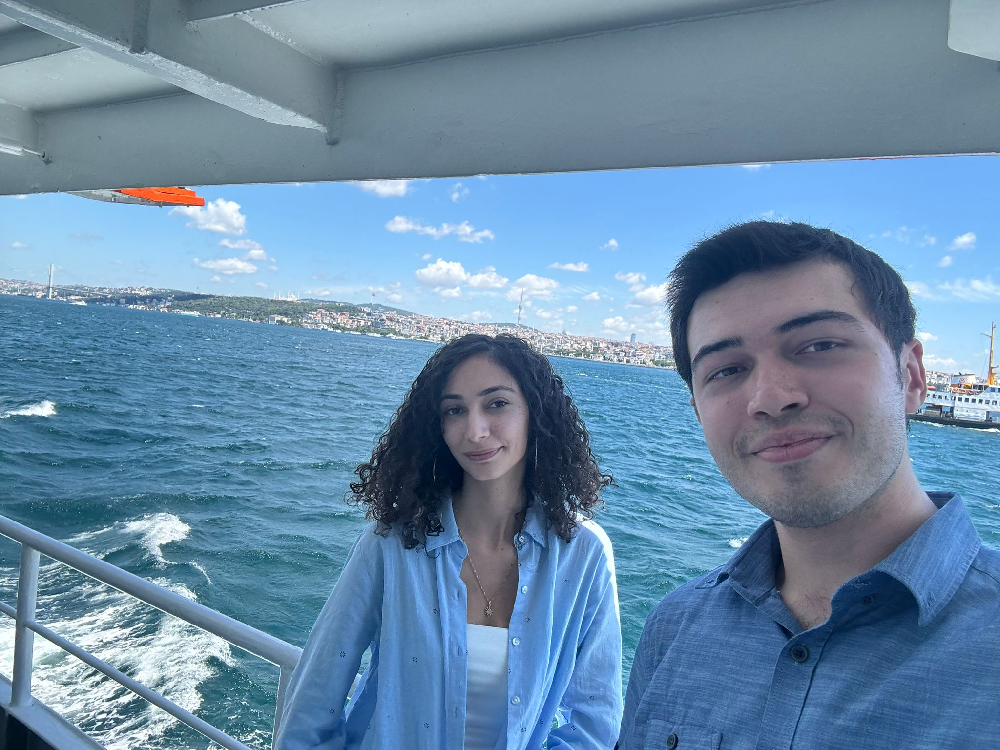
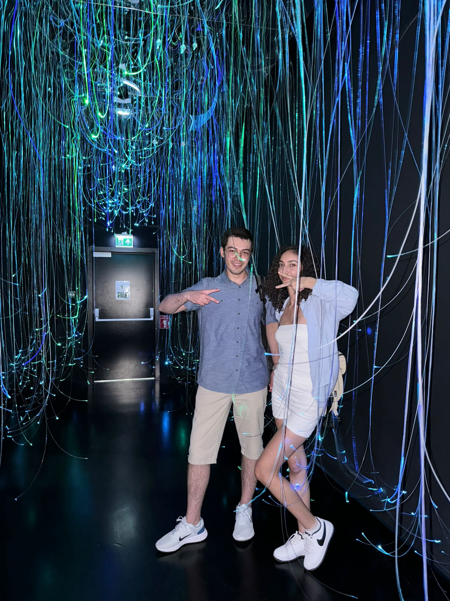

Once upon a time...

Erdem, slowly üzerinden rastgele gördüğü birine mektup yazmaya karar verir.
Erdem, slowly üzerinden rastgele gördüğü birine mektup yazmaya karar verir.
Mektup şans eseri Ebrar adında birine ulaşır. Ebrar mektubu okur ve cevaplar. Bu 2'li hergün mektup gönderirler ve birbirlerini tanımaya başlarlar.
Çok zaman geçmeden twitter üzerinden konuşmaya devam ederler. Enerjileri o kadar yüksektir ki twitter bu enerjiyi kaldıramaz ve çökmeye başlar.
Sohbet etmenin yanında beraber oyun oynamaya başlarlar. Amiral battı en sevdikleri oyun olur. Ne şanstır ki Erdem hiç kaybetmez! Hep kazanır, hep kazanır!
Ancak Ebrar, rus oyun modunu keşfeder ve azimli bir şekilde "Deryaların Kaptanı" rütbesine erişmeyi başarır.
Bir süre sonra Erdem'in askerlik dönemi gelir. 2'li uzun zaman sonra birbirleri ile konuşamayacakları için mutsuz olur.
Erdem bu sorunun çözümü için ileriye mektup gönderebileceği bir websitesi oluşturur. Ebrar ise o yokken mektuplarını cevaplayarak ileri zamana mesaj gönderir.
Erdem askerden döndükten sonra konuşmaya devam ederler. Artık bir buluşma ayarlamak, yüz yüze tanışmak isterler. O sırada Ebrar okuldan mezun olur, iş bulur ve İstanbula geri döner. Bu şekilde İstanbul'da buluşabilecekleri bir zaman ayarlarlar.
ikili bir araya gelir harika zaman geçirirler.
Yıldız parkına giderler,
vapur turu yaparlar,
çok gezmek istedikleri dijital deneyim müzesini gezerler,
